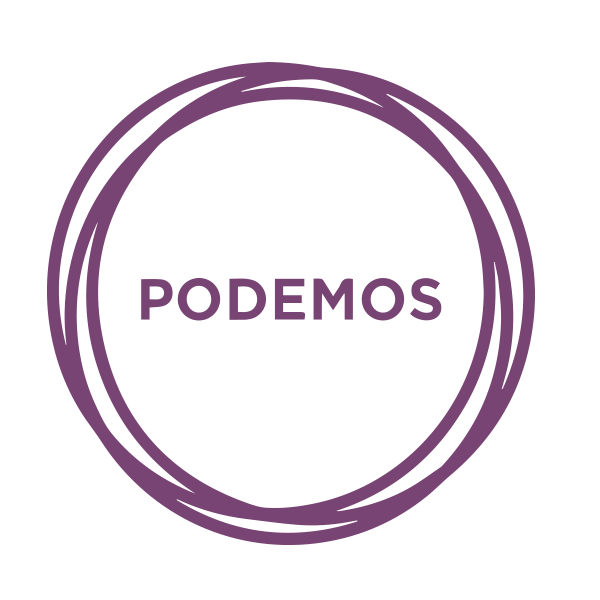

<!--<link rel="import" href="progress-bubble.html">-->


<dom-module id="x-graphic" >
<template>
<style>

#ext {
	background-color: #0A2533;
	padding: 15px;
}
div.content-detalle-graphs  {
	background-color: #173F56 !important;
	margin: auto;
	overflow: hidden;
	text-align: left;
	padding-left: 40px;
}

h1 {color: #748c99; font-family: 'Montserrat', sans-serif; font-weigth: bold;font-size: 3vw; text-transform: uppercase;  }
h2 {color: #748c99; font-family: 'Montserrat', sans-serif; font-weigth: bold;font-size: 1.5vw;}

/* progress bar */
div.content-progress-bars {
	padding-top: 15px;		
}
div.progress-bar {
	width: 80%;
	text-align:left !important;
	padding-left: 10px;
	font-size: 18px;
	padding-top: 8px;
}
.progress { 
    background-color: #173F56 !important;
    border-color: #173F56 !important;
    height: 40px !important;
    margin-bottom: 5px;
}
span.total-escanyos {
    padding-left: 20px;
    font-size: 30px;
    font-weight: bold;
}
div.logo-partidos {}
div.logo-patidos img { width: 115px; background-color: #FFF; padding: 10px; -webkit-border-radius: 15px; -moz-border-radius: 15px; border-radius: 15px; }

/* colores partidos */
		.socialistas { color: #DB4949;}
		.socialistas-old { color: #BC1919;}
		.pnv { color: #0E7711;}
		.pnv-old{ color: #116311;}
		.bildu { color: #A2E233;}
		.bildu-old{ color: #739E21;}
		.pp { color: #76C7F4;}
		.pp-old{ color: #0098FF;}
		.podemos { color: #D67CD6;}
		.podemos-old { color: #965092;}


</style>

<div id ='ext' class='template-all-layouts'>
<div id='container' class='col-md-12 layout-fullwidth content-detalle-graphs' >
	<h1 id='placeName'>LUGAR</h1>
	<h2 id='count'>ESCRUTINIO</h2>

	<div class="media content-progress">
					<div class="media-left logo-patidos">
						
					</div>					
					<div class="media-body content-progress-bars">
							<div class="progress">
							  <div id='bar1year11'class="progress-bar" role="progressbar" aria-valuenow="0" aria-valuemin="0" aria-valuemax="100" style="min-width: 2em; width: 23%; background-color:#DB4949;">
								2011
							  </div>
							  <span id='num1year11' class="total-escanyos socialistas"></span>
							</div>
							<div class="progress">
							  <div id='bar1year15' class="progress-bar" role="progressbar" aria-valuenow="2" aria-valuemin="0" aria-valuemax="100" style="min-width: 2em; width: 28%; background-color:#BC1919;">
								2015
							  </div>
							  <span id='num1year15' class="total-escanyos socialistas-old">9</span>
							</div>
					</div>
				</div>
				<!-- cada progreso -->
				<div class="media content-progress">
					<div class="media-left logo-patidos">
						
					</div>					
					<div class="media-body content-progress-bars">
							<div class="progress">
							  <div id='bar2year11' class="progress-bar" role="progressbar" aria-valuenow="0" aria-valuemin="0" aria-valuemax="100" style="min-width: 2em; width: 48%; background-color:#0E7711;">
								2011
							  </div>
							  <span id='num2year11' class="total-escanyos pnv"></span>
							</div>
							<div class="progress">
							  <div id='bar2year15' class="progress-bar" role="progressbar" aria-valuenow="2" aria-valuemin="0" aria-valuemax="100" style="min-width: 2em; width:53%; background-color:#116311;">
								2015
							  </div>
							  <span id='num2year15' class="total-escanyos pnv-old">23</span>
							</div>
					</div>
				</div>
				<!-- cada progreso -->
				<div class="media content-progress">
					<div class="media-left logo-patidos">
						
					</div>					
					<div class="media-body content-progress-bars">
							<div class="progress">
							  <div id='bar3year11' class="progress-bar" role="progressbar" aria-valuenow="0" aria-valuemin="0" aria-valuemax="100" style="min-width: 2em; width: 37%; background-color:#A2E233;">
								2011
							  </div>
							  <span id='num3year11' class="total-escanyos bildu"></span>
							</div>
							<div class="progress">
							  <div id='bar3year15' class="progress-bar" role="progressbar" aria-valuenow="2" aria-valuemin="0" aria-valuemax="100" style="min-width: 2em; width: 42%; background-color:#739E21;">
								2015
							  </div>
							  <span id='num3year15' class="total-escanyos bildu-old">22</span>
							</div>
					</div>
				</div>
				<!-- cada progreso -->
				<div class="media content-progress">
					<div class="media-left logo-patidos">
						
					</div>					
					<div class="media-body content-progress-bars">
							<div class="progress">
							  <div id='bar4year11' class="progress-bar" role="progressbar" aria-valuenow="0" aria-valuemin="0" aria-valuemax="100" style="min-width: 2em; width: 37%; background-color:#76C7F4;">
								2011
							  </div>
							  <span id='num4year11' class="total-escanyos pp"></span>
							</div>
							<div class="progress">
							  <div id='bar4year15' class="progress-bar" role="progressbar" aria-valuenow="2" aria-valuemin="0" aria-valuemax="100" style="min-width: 2em; width: 27%; background-color:#0098FF;">
								2015
							  </div>
							  <span id='num4year15' class="total-escanyos pp-old">8</span>
							</div>
					</div>
				</div>
				<!-- cada progreso -->
				<div class="media content-progress">
					<div class="media-left logo-patidos">
						
					</div>					
					<div class="media-body content-progress-bars">
							<div class="progress">
							  <div id='bar5year11' class="progress-bar" role="progressbar" aria-valuenow="0" aria-valuemin="0" aria-valuemax="100" style="min-width: 4em; width: 2%; background-color:#D67CD6;">
								2011
							  </div>
							  <span id='num5year11' class="total-escanyos podemos"></span>
							</div>
							<div class="progress">
							  <div id='bar5year15' class="progress-bar" role="progressbar" aria-valuenow="2" aria-valuemin="0" aria-valuemax="100" style="min-width: 2em; width: 28%; background-color:#965092;">
								2015
							  </div>
							  <span id='num5year15' class="total-escanyos podemos-old">9</span>
							</div>
					</div>
				</div>


</div>
</div>
</template>
</dom-module>
<script>
Polymer.require = function(tag, deps, func) {
  require(deps, function() {
    Polymer(func.apply(this, arguments));
  });
};
Polymer.require('x-graphic',['2015data'],function(data){
return {
    is:'x-graphic',


    
    behaviors:[ComponentQueryBehavior,ComponentStatusBehavior],
    hostAttributes:{
      time:1,
      prevTime:1432509468,
      data:'',
      skew:0.0,
		sm:null,
		l:''
    },
    properties:{
        place:{
          type:String,
          value:'',
          notify: true
        },
        seatNum:{
          type:String,
          value:'',
          notify: true
        },
        timestamp:{
           type:Number,
           value:0,
           observer:'timestampChanged'
        },
        customCmd:{
            type:String,
            value:'',
            observer: 'customCmdReceived'
        }
    },


	ready:function(){
		document.addEventListener ('motion-ready',this.smReady.bind(this));
		this.$.placeName.innerHTML=this.place;
		if(this.place==='Irunea'){
			this.seatNum='26';
		}
		else if(this.place==='Donostia'){
			this.seatNum='27';
		}
		else if(this.place==='Bilbo'){
			this.seatNum='25';
		}
		else if(this.place==='Gasteiz'){
			this.seatNum='27';
		}
		this.getPastData(this.hostAttributes.prevTime);
		this.getActualData(this.hostAttributes.prevTime);
    	this.data = electionData;
    	
		var scope=this;
		this.addEventListener('component-query',function(e){

				scope.getPastData(scope.hostAttributes.prevTime);
				scope.getActualData(scope.hostAttributes.prevTime);
			
    	},true);

	},
  customCmdReceived: function(data){
      console.log("DATA",data);
  },
	smReady:function(){
  		// Sharemotion objetua lortu
  		var _this=this;
   		this.sm = mediascape.AdaptationToolkit.SharedMotion();
  		// ebentuak entzun ta jaso
  		var handler = function (e) {

      		_this.timestamp=1432509468+Math.round(e.pos);

      	};
    	this.sm.mapp.motions.shared.on("timeupdate", handler);
	},
	timestampChanged:function(){

		var interval=10;
		
      
		if(this.timestamp-interval===this.hostAttributes.prevTime || this.timestamp-this.hostAttributes.prevTime<0 || this.hostAttributes.prevTime+interval<this.timestamp || this.timestamp===1432511029){


			this.getActualData();
			
		}
   

	},
	getActualData:function(){


			var scope=this;
			scope.data=electionData;
      		var data =electionData;
			var nextTs=false;
			for(var i=1;i<data.results.length;i++){

				if(scope.timestamp===parseInt(data.results[i].time)){
					scope.hostAttributes.time=i;
					scope.hostAttributes.prevTime=parseInt(data.results[i].time);
					nextTs=true;
				}

			}
			if(nextTs===false){
				for(var i=1;i<data.results.length;i++){
					if(scope.timestamp>parseInt(data.results[i].time) && scope.timestamp<parseInt(data.results[i+1].time)){
						scope.hostAttributes.time=i;
						scope.hostAttributes.prevTime=parseInt(data.results[i].time);
					}
				}
			}

			var where='';
			for(var i=0;i<data.results[scope.hostAttributes.time].places.length;i++)
			{
				if(scope.place===data.results[scope.hostAttributes.time].places[i].name){
					where=i;
				}
			}
		
			dataToShow=[];
			dataToShow.push(data.results[scope.hostAttributes.time].places[where].counting);
			for(var i=0;i<5;i++)
			{
				dataToShow.push({'party':data.results[0].places[where].parties[i].name,'2015':data.results[scope.hostAttributes.time].places[where].parties[i].councillors,'color15':data.results[scope.hostAttributes.time].places[where].parties[i].color});
			}
			
			this.updateActualBars(dataToShow);

			
	},
	updateActualBars:function(dataToShow){
		this.$.count.innerHTML=dataToShow[0].split('%')[0]+'% VOTE SCRUTINIZED';

		for(var i=1;i<dataToShow.length;i++){
			
			this.querySelector('#num'+i+'year15').innerHTML=dataToShow[i][2015];
			this.querySelector('#num'+i+'year15').style.color=dataToShow[i].color15;
			this.querySelector('#bar'+i+'year15').style.backgroundColor=dataToShow[i].color15;
			this.querySelector('#bar'+i+'year15').style.width=(parseInt(dataToShow[i][2015])*100/parseInt(this.seatNum))+15+'%';
		}
	},
	getPastData:function(){
			var scope=this;			
      		var data =electionData;
			
			var where='';
			for(var i=0;i<data.results[scope.hostAttributes.time].places.length;i++)
			{
				if(scope.place===data.results[scope.hostAttributes.time].places[i].name){
					where=i;
				}
			}
		
			dataToShow=[];
			dataToShow.push(data.results[scope.hostAttributes.time].places[where].counting);
			for(var i=0;i<5;i++)
			{
				dataToShow.push({'party':data.results[0].places[where].parties[i].name,'2011':data.results[0].places[where].parties[i].councillors,'color11':data.results[0].places[where].parties[i].color,'icon':data.results[0].places[where].parties[i].icon});
			}
			
			this.updatePastBars(dataToShow);
	},
	updatePastBars:function(dataToShow){

		for(var i=1;i<dataToShow.length;i++){
			this.querySelector('#logo'+i).src="resources/images/icons/"+dataToShow[i].icon;
			this.querySelector('#num'+i+'year11').innerHTML=dataToShow[i][2011];
			this.querySelector('#num'+i+'year11').style.color=dataToShow[i].color11;
			this.querySelector('#bar'+i+'year11').style.backgroundColor=dataToShow[i].color11;

			if(parseInt(dataToShow[i][2011])===0){
				this.querySelector('#bar'+i+'year11').style.width='15%';
			}
			else{
				this.querySelector('#bar'+i+'year11').style.width=(parseInt(dataToShow[i][2011])*100/parseInt(this.seatNum))+15+'%';
			}

		}

	}
	
}


});
 </script>
